eProcurement Ontology - an Overview for Business Users
- 1. Abstract
- 2. What is the ePO Ontology?
- 3. Principles of the eProcurement Ontology (ePO)
- 4. Reuse of other ontologies and vocabularies
- 5. Representation of the eProcurement Ontology
1. Abstract
In 2016 the Publications Office of the European Union (Publications Office or OP) started a project funded by the ISA Programme to organise and support the development of a Public Procurement Ontology (ePO).
The ultimate objective of the ontology is to put forth a commonly agreed OWL ontology that will conceptualise, formally encode and make available in an open, structured and machine-readable format data about public procurement, covering it from end to end, i.e. from notification, through tendering to awarding, ordering, invoicing and payment. With this goal in mind the OP engaged a Working Group (WG) of experts with the mission of building consensus on the analysis results and deliverables developed by the OP’s teams.
By mid-2017 a version 1.00 of the Ontology was delivered and submitted to the Working group for discussion. All the materials related to this version were made public and are accessible through the ISA2 Joinup platform; including the discussions held in the Working Group (WG).
ePO v2.0.0, was initiated in January 2018 and subsequently, further versions have been released. More details on the evolution of the ePO can be found on the History and Planned Developments page.
This document describes the objectives, the methodological approach and the deliverables produced in this new version.
2. What is the ePO Ontology?
In EU e-Procurement, the ontology describes objects and concepts, with definitions, attributes, attributes (mandatory and optional), and relationships that occur in the EU public procurement process. Ontology - a General Definition In a general sense, an ontology defines what is or exists, such as
-
Classes (objects)
-
Class hierarchies and dependencies
-
Roles, attributes, properties, relationships, and actions.
An ontology can be thought of as the description of an ecosystem, and covers all the definitions, actors, and interactions in the ecosystem. It gives structure and definition to the data collected.
2.1. Reasons for a formal ontology
-
Ease of a common vocabulary: consistency in the definition of process and concept amongst stakeholders (such as users/ technical implementors/ subject-matter experts).
-
Standardisation of vocabulary
-
Adoption of an ontology standard: in this case, the opensource Web Ontology Language (OWL).
-
Consistency in the definition of process and concepts in technologies used.
-
Conception of the ontology based on expert knowledge, and maintenance of it through consultation with stakeholders.
-
Legal and regulatory compliance with EU laws and regulations.
-
The ability to respond to formal initiatives around improving EU data.
-
Transparency of EU e-procurement operations and ease of reporting.
-
Forms a foundation for the technical work required to make the e-procurement technical processes function as intended.
-
Forms the foundation upon which best practises/ principles/ governance can be applied i.e., all involved in eProcurement process have the same, correct, approved, up-to-date, and consistent definitions and understanding of what is happening in it.
-
Changes and improvements follow a formal consultation and approval process.
-
Interfaces to internal systems from other systems have a common documented system to guide their interaction.
3. Principles of the eProcurement Ontology (ePO)
3.1. Time phased approach
Figure 1 - ePO phases in Chronological Order:
Some objects of the ontology are time agnostic - a Buyer, for example, occurs at every phase of the procurement process.
Some attributes and actions of, or relationships between, objects are time and/ or circumstance dependent i.e., they only appear, or are relevant, at certain stages in the process.
While the ontology can be quite complex, it must balance the needs of being thorough and complete, and remaining flexible enough to evolve and change over time.
3.2. Other Rules and Scope
Additional rules the Ontology development is based on:
-
Using an upper-level ontology as an anchor and deciding the appropriate underpinning, ontological commitment, and level of abstraction (the upper model is not included in the final ontology)
-
Modelling principles set in place and applied consistently, i.e., wrt naming, relation directions, design patterns applied, etc.
-
The scope set to include both the concepts in the current TED standard forms (non-electronic) and those from the eForms. eForms coverage
-
One goal for ePO is that all eForms business terms (BT) are found somehow, somewhere in the ontology. This means that BTs become attributes of a class or relations (predicates).
Figure 2 - eForms coverage: 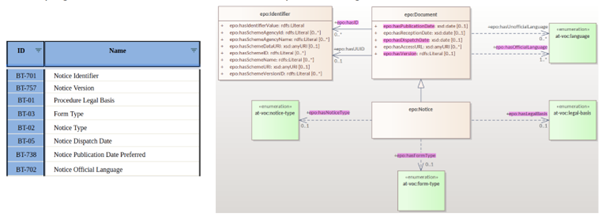
3.3. The Evolution of the eProcurement Ontology
Figure 3 - The ePO roadmap 2017 - 2022 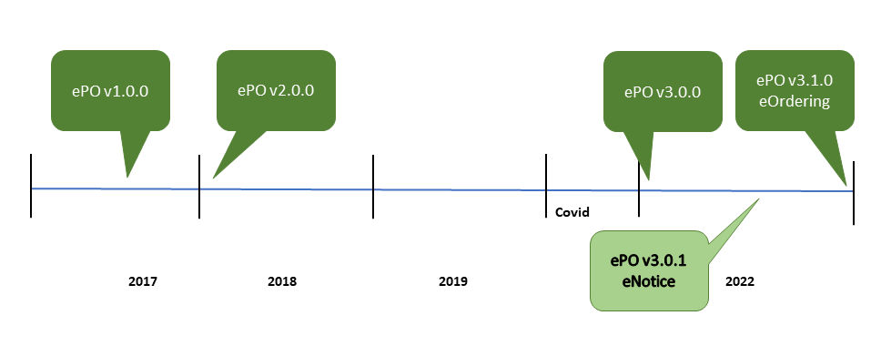
Figure 4 - The ePO roadmap 2023 - 2025 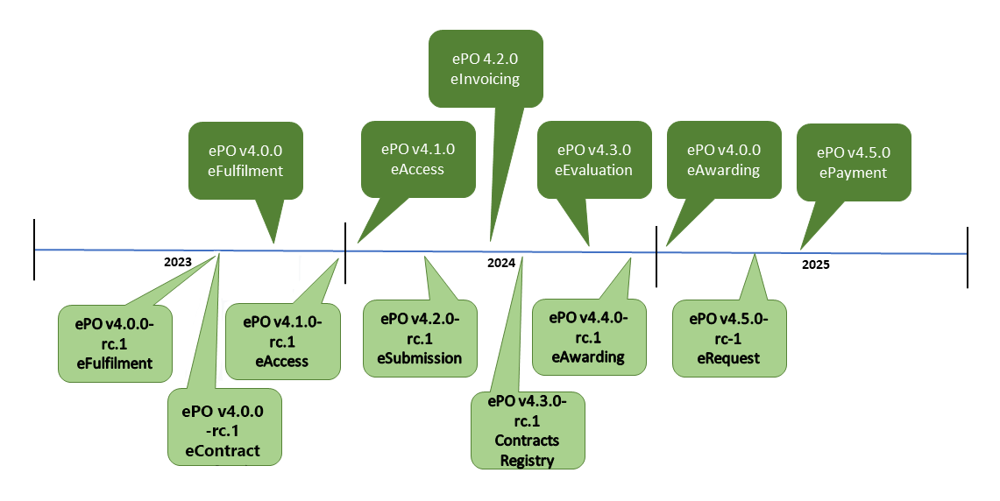
More detail on the proposal for each release, go to the History and Future Developments page.
The creation and maintenance of the ontology is a collaboration between the OP, programmers, working group members and other stakeholders. Meetings to discuss, agree and schedule changes to the ontology occur regularly.
Triggers for changes in the ontology might be:
-
Changes in law e.g., a change in the requirements for trade, in certain products, or from certain suppliers
-
Changes in the functionality of software modules using the eProcurement ontology
-
Feedback from users (errors or suggestions)
-
Discussion in the working group meetings
-
Planned features in upcoming software releases
-
New initiatives by the EU to further their data related goals
Changes in the ontology cannot be done in isolation from the applications that are based on them. This is where versioning protects the functionality of the last version for those still using it, while allowing those who wish to adopt the new version to do so. Both versions work in parallel for a time until legislation or other reason, e.g, withdrawal of technical support, forces users to upgrade their version.
3.4. Working group meetings
-
Online meetings with the working group are held approximately every fortnight, sometimes more or less frequent due to pressing matters or holidays.
-
Quarterly meetings are held every quarter.
Meeting minutes and presentations are made publicly available online.
3.5. Stakeholders
| Stakeholder category | Area of interest |
|---|---|
Contracting authorities |
Interconnection of public procurement systems, Transparency and monitoring, Innovation & value added services |
Economic operators |
Transparency and monitoring Innovation & value added services |
Procurement intermediaries and aggregators |
Interconnection of public procurement systems, Innovation & value added services |
Academia and researchers |
Innovation & value added services, Transparency and monitoring |
Media and (data) journalists |
Transparency and monitoring |
Auditors and regulators |
Transparency and monitoring |
Members of parliaments |
Transparency and monitoring |
Standardisation organisations |
Interconnection of public procurement systems |
NGOs |
Transparency and monitoring |
Citizens |
Transparency and monitoring |
3.6. The hierarchical nature of the model
Having an upper level of definition is important and helpful. The example below shows how an agent is the higher or abstract level and person is a lower, and more concrete, level.
Figure 5 - Upper-level organisation of ePO: 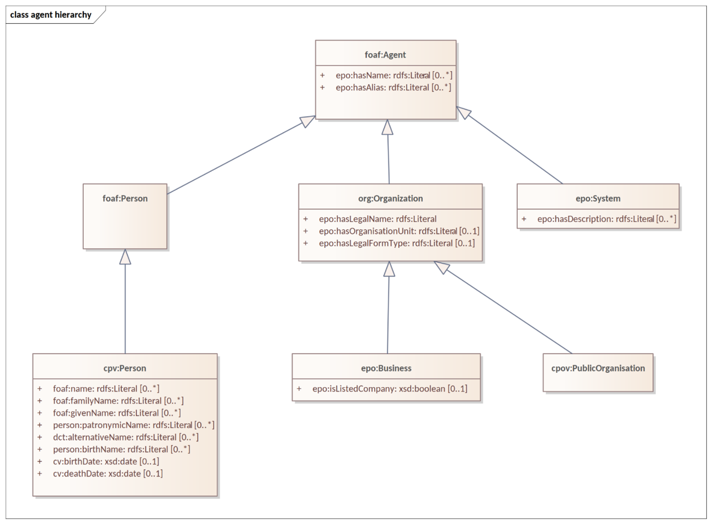
The development of the eProcurement ontology is oriented by a principle based perspective. One example of a principle is that once something is created / instantiated it is not possible to modify it to something else completely different. (e.g. an organisation should be created only once and it is not repeated in a different way on the model).
| ID | Principle Item | Description |
|---|---|---|
PR_01 |
Instance Immutability |
Once created (published), an instance shall not be conceptualised as changeable. Its information may be editable, but the instance cannot be changed to the extent that it evolves into something completely different. |
PR_2 |
Non-redundancy |
The properties of an entity must be instantiated only once, and not repeated in the data. Its properties may only be referred to from a different context and not duplicated in it. |
3.7. Key Data Processing Goals
In the EU, two key goals around data and data processing are pursued:
3.7.1. The provision of open data
The EU portal website, https://data.europa.eu/, makes many datasets publicly available on areas ranging from agriculture to health, finances, transport, procurement, and many more. The portal’s intentions are to:
-
give access and foster the reuse of European open data among citizens, business and organisations.
-
promote and support the release of more, and better-quality metadata and data by the EU’s institutions, agencies and other bodies, and European countries.
-
educate citizens and organisations about the opportunities that arise from the availability of open data. Collecting high quality data and fostering its reuse are key components of this goal.
3.7.2. The Enactment of the Interoperable Europe Act (Policy | Joinup (europa.eu))
The Interoperable Europe Act proposes a strategic interoperability cooperation mechanism across the European Union by “creating the setup and tools for interoperability within public administrations on a Union-wide scale and remove the unnecessary legal, organisational, semantic and technical obstacles”.
To achieve this goal, the Interoperable Europe initiative proposes:
-
A structured and co-owned EU cooperation on interoperability that brings together public administrations, supported by public and private actors.
-
Mandatory interoperability assessments to evaluate the impact of changes in IT systems and related digital services.
-
The share and reuse of interoperability solutions, powered by an ‘Interoperable Europe Portal’ – a one-stop-shop for solutions, and a community platform.
-
Innovation and support measures, including regulatory sandboxes and GovTech cooperation, to promote policy experimentation, developing skills, and the scaling up of interoperability solutions for reuse.
The provision of open-source software applications and development kits that can be adopted and developed further by consumers is key.
When starting to develop a software application, or wanting to extract data from a data set, knowing what data and metadata is, or must be, stored in it is essential. This is where an ontology comes into play, providing a “dictionary” of the data components, what kind of data they contain, and how they relate to each other.
3.8. Upper Level Ontologies:
Upper level ontologies are generally defined as a schema consisting of general terms that are common across all domains such as "object", "property" and "relation". (lower or domain ontologies being the data that populates the schema)
Some sources define more levels of ontology, such as upper, domain-level, task-level and application ontologies. In all cases, however, the upper or top level describes very general concepts independent of domain.
The application of upper level ontologies enables semantic interoperability of ontologies across multiple domains. Because the general concepts they describe are common to all domains, they provide a common ontological foundation for domain ontologies.
3.9. Source Management:
Best practices, i.e., the use of a version-controlled repository (GitHub) and tool (Git), are employed for the development of the ontology. A master/ main branch is used as the source from which code is published. To make changes to the model, development is done on temporary branches using tags. After validation, the new branch is merged with the main/ master.
Figure 6 - Source management methodology:
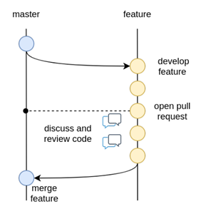
4. Reuse of other ontologies and vocabularies
4.1. Core Vocabularies
The EU Core Vocabularies (from the website) are simplified, re-usable and extensible data models that capture the fundamental characteristics of an entity in a context-neutral fashion. Public administrations can use and extend the Core Vocabularies in the following contexts:
-
Development of new systems: the Core Vocabularies can be used as a default starting point for designing the conceptual and logical data models in newly developed information systems.
-
Information exchange between systems: the Core Vocabularies can become the basis of a context-specific data model used to exchange data among existing information systems.
-
Data integration: the Core Vocabularies can be used to integrate data that comes from disparate data sources and create a data mesh-up.
-
Open data publishing: the Core Vocabularies can be used as the foundation of a common export format for data in base registries like cadastres, business registers and public service portals.
The Handbook for using the Core Vocabularies describes how the Core Vocabularies can be used by public administrations. It explains how to a) design new data models that extend the Core Vocabularies; and b) map existing data models to the Core Vocabularies. There is also a practical guide to using the Core Vocabularies, based on the handbook.
4.1.1. Core Criterion and Core Evidence Vocabulary (CCCEV)
To facilitate vocabulary standardisation, the EU developed the Core Criterion and Core Evidence Vocabulary (CCCEV), which “supports the exchange of information between organisations that define criteria and organisations that respond to these criteria by means of evidences.”
In eProcurement these are contracting authorities that issue eNotices (calls for tender) listing their criteria for legitimate supply, and economic operators, organisations wishing to respond to calls for tender by supplying the evidence that they meet the criteria for legitimate supply.
From the website, the benefits of using the CCCEV are to:
-
Facilitate development of interoperable information systems: the use of common vocabularies to describe criteria and evidence facilitates the development of information systems and improves their interoperability.
-
Create a repository of reusable criteria in machine-readable formats: the use of common vocabularies promotes the creation of a repository of criteria and evidence information.
-
Automate the assessment of criteria: the Core Vocabulary describing the criterion responses allows systems to easily compare the information collected from different parties and enables automatic assessment of the responses for a specific criterion.
-
Automate scoring of responses: weighting criteria, the assessment can be followed by an automated scoring of the responses provided by different parties.
-
Promote cross-border participation in public procurement: the use of the Core Vocabulary for electronic criterion and evidence allows for removing language barriers thereby improving the cross-border exchange of information, and the cross-border participation in pan-European selection processes.
-
Calculating statistics: standardising data for criterion, criterion responses and evidences allows calculating statistical information on the most common used criteria for a given process, the most relevant evidences, etc.
-
Create a registry of mappings of criteria: using the Core Vocabulary, it is possible to create a registry of mappings to allow cross-checking of the criteria with the evidences of each particular Member State.
The eProcurement Ontology was developed in accordance with the CCCEV’s "Once Only" principle.
4.2. Single Digital Gateway
The single digital gateway is a network of national portals that provides online access to information, administrative procedures and assistance services that European Union (EU) citizens and businesses may need when living or doing business in another EU Member State. Access to the digital gateway is gained via a search function in the Your Europe portal.
5. Representation of the eProcurement Ontology
The ontology artifacts are in machine-readable, and human-readable form:
5.1. Machine-readable:
The formats for each module are the:
-
OWL core: This component constitutes the backbone of the eProcurement ontology. It is the simplest from the formal point of view and lightest in terms of detail. The main purpose of this component is to declare the classes, properties datatypes and controlled lists. It established, in a machine-readable format, the concepts by assigning each a URI and decorating it with a human-readable labels and descriptions. This represents a mechanism that established a common understanding between humans and machine. It is void of any constraints or restrictions and may be used as a formal ontology or as a data exchange vocabulary.
-
OWL restrictions: This component accommodates formal intentional definitions of the classes and properties. It is mostly formed of subclass restrictions, complex class definitions, domain and range specifications for properties; which can be derived from the conceptual model. This component provides the rules and logical conditions for reasoning with eProcurement ontology. So, the statements from this component play the role of necessary and sufficient conditions to support consistency checking and classification reasoning functionalities for eProcurement ontology. Mostly expressions in OWL 2 should be acceptable for the reasoning purposes of eProcurement ontology. It is possible, however, that OWL 2 is too expressive, leading to slow reasoning, and thus downgrading to OWL dialect (EL, QL, RL) might be necessary. This implies that multiple variants of these components should be generated, one for each OWL dialect as described in Section 5.4. Each of these variants shall be tested, and the most appropriate choice selected for reasoning in the validation phase
-
SHACL_shapes: In OWL the constraints are formed at the semantic level in the way the logic of the entire knowledge base holds together consistently. It is not always easy or obvious how the constraints should be formed so that they fulfil a business or application requirement. Moreover, in practice, often the kind of constraints necessary are those aiming at the surface representation of the data. XSD, for example, provides a description of how an XML document ought to be structured. In the eProcurement domain, before the RDF data is utilised as a semantic resource, it must first respect a more formal convention on how it is instantiated and organised. There is a need for the XSD counterpart for the RDF graphs. Shapes Constraint Language (SHACL) provides a specification for validating graph-based data against a set of conditions. It provides a concise, uniform syntax for both describing and constraining the contents of an RDF graph. Amongst others, SHACL includes features to express conditions that constrain the number of values that a property may have, the type of such values, numeric ranges, string matching patterns, and logical combinations of such constraints. Application profiles (AP) represent a set of constraints on the logical model tying it to a particular system implementation. The application profiles, in this project, must be expressed using SHACL language. The approach taken by the Publications Office to develop APs is described in. The same style should be maintained for the eProcurement APs.
5.2. Human readable:
Conceptual models: these are provided in the enterprise architecture format of visual maps, showing the elements: the classes, their properties, their attributes, the relationships between classes, the direction of relationship, the nature of relationships e.g., 1 to many, etc. Glossaries complement the conceptual models: A glossary is a "dictionary" providing the definitions of concepts and is provided in the form of a table that lists the concept, its definition, the attributes of the class, and the format the data must be in e.g., numeric, binary, etc.
5.3. The Core Module and other modules
The eProcurement ontology includes a core module, containing concepts common to all modules, and specific modules: eCatalogue, eNotice, and eOrdering, containing vocabularies specific to that module.
The modular structure of the ePO to makes maintaining the model easier.
Figure 7 - The modular approach of the ePO:
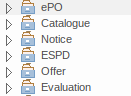
Each version and, within the version, each module of the ePO has a Conceptual Model. These can be viewed via the following link: https://github.com/OP-TED/ePO/tree/release/x.y.z/analysis_and_design/conceptual_model, replacing "x.y.z" for the version you wish to view.
*Similarly, The Glossaries for each version and module can beviewed and downloaded via the following link, https://github.com/OP-TED/ePO/tree/release/x.y.z/glossary, replaceing the x.y.z with a valid version number.
The approach for change management is explained in the Description of a change management release and publication process for structural metadata specifications developed by the ISA Programme, also summarised for the eProcurement Ontology in chapter 4.3 of the Project Charter Document
This document formalises how changes to the specifications of structural metadata developed by the ISA Programme are managed and how new releases are published. According to the definitions followed by the ISA Programme, structural metadata includes data models (e.g. DCAT application profile for data portals in Europe and reference data.
The change management process has the following characteristics:
-
Openness: In order for public administrations to rely on specifications of structural metadata developed by the ISA Programme, the openness of the change management is a key – openness is also a key assessment criterion in the Common Assessment Method of Standards and Specifications. Openness means that requests for changes can be submitted by any stakeholder and that the analysis and decisions taken are logged in a transparent manner. An open change management process improves the quality of the specification.
-
Controlled change: Public administrations that use structural metadata or implement specifications of structural metadata developed by the ISA Programme must not be negatively impacted by unexpected changes to these specifications. A release schedule must be established, allowing changes to take place in a stepwise and traceable manner. New releases should also be versioned consistently.
The Change Management process is based on generic change and release management processes in ITILv3 and the generic Methodology and tools for Structural Metadata Management and Governance
5.4. Technical Aspects
Enterprise Architect (EA) is the tool used to design the conceptual model. The ontology is designed as UML model and Class diagrams offer thematic views on the model. The ontology architecture is described on this website. It covers the main building blocks of the ontology, how it is layered (core, restrictions and shapes), and what output artefacts are created for each layer. The UML model follows a set of conventions so that it can be transformed automatically into OWL, and SHACL representations (using model2owl toolchain).
5.5. Examples of the conceptual model elements
Version 3.1.0 onwards adopts a package-based grouping of concepts. Also, there are more diagrams introduced than at the beginning of the ePO development. This makes it easier to avoid getting distracted by neighbouring concepts.
Figure 8 - Package-based grouping of ePO concepts:
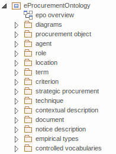
The ePO model provides hierarchy and relations diagrams.
Figure 9 - Hierarchy diagram (focus on the abstraction):
Figure 10 - Relations diagram (focus on the connections): 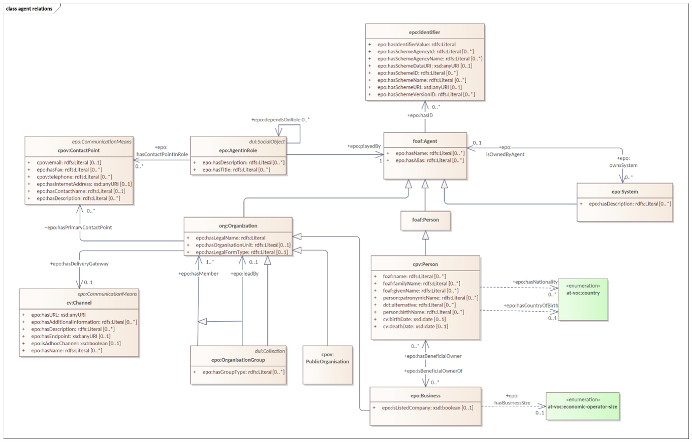
There are diagrams used for a scoped view versus a wide view of the model. It is useful to distinguish these scope diagrams because you can see how they are connected to other concepts, some show only the relations, some show only the hierarchy. Even if the concepts are repeated across various diagrams, this makes it easier to follow the logical model construction.
5.5.1. Data Types
Figure 11 - xsd data types used:
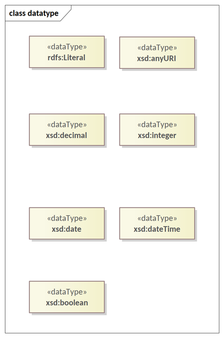
Figure 12 - Example of transitioning from old UML/UBL data types to new XSD data types: 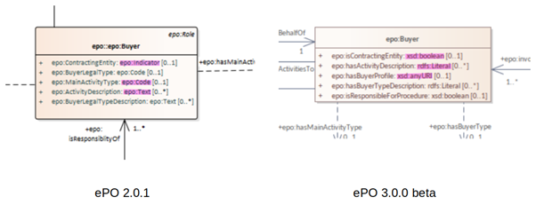
5.5.2. Codelists
-
The ontology is provided in UML, where the use of a code list is recommended. However, in OWL generation, there is no code list so users are able to use whatever terms they wish.
-
In the past the properties of a class the attribute type ‘Code’ was associated with the class where needed. Currently, these attributes type code have been removed and there are only relations.
Figure 13 - Removal of “Code” type attributes: 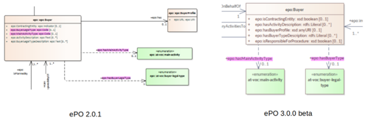*
5.5.3. Naming Conventions
-
The naming conventions are harmonised for predicates and class names. The source class is connected with the target class by using a verb. For more information on naming conventions, go to Conceptual Model conventions
Figure 14 - Harmonisation of predicates and class names: 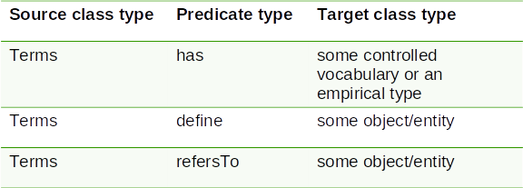
5.5.3.1 AgentinRole Patterns
Another important part of the development was focused on the reification of the roles.
Figure 15 - AgentInRole pattern: 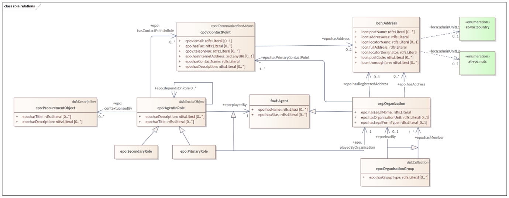
In version 3.x, the roles are represented as a hierarchical structure of concepts, with the superclass being the AgentInRole concept (following the agent in role design pattern). The agent in role is played by an agent and it is contextualised by a procurement object (for example, lot or procedure).
Figure 16 - Roles hierarchy: 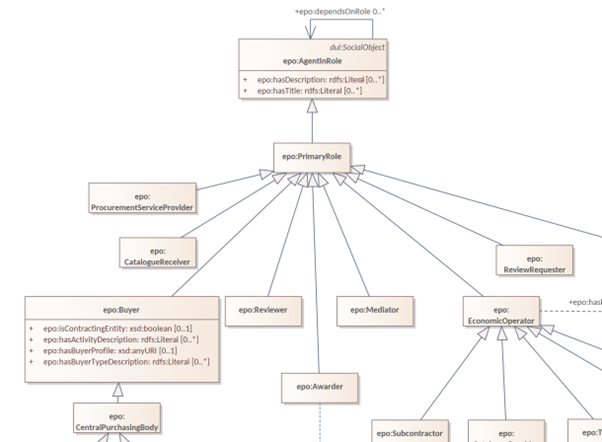
Any comments on the documentation?